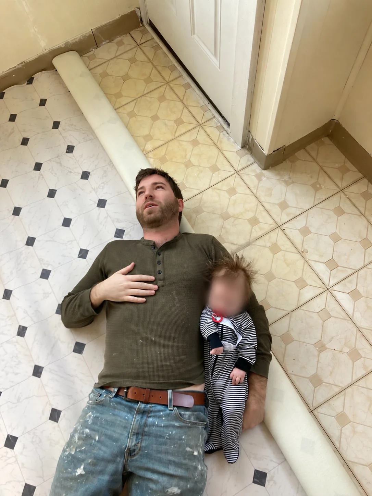
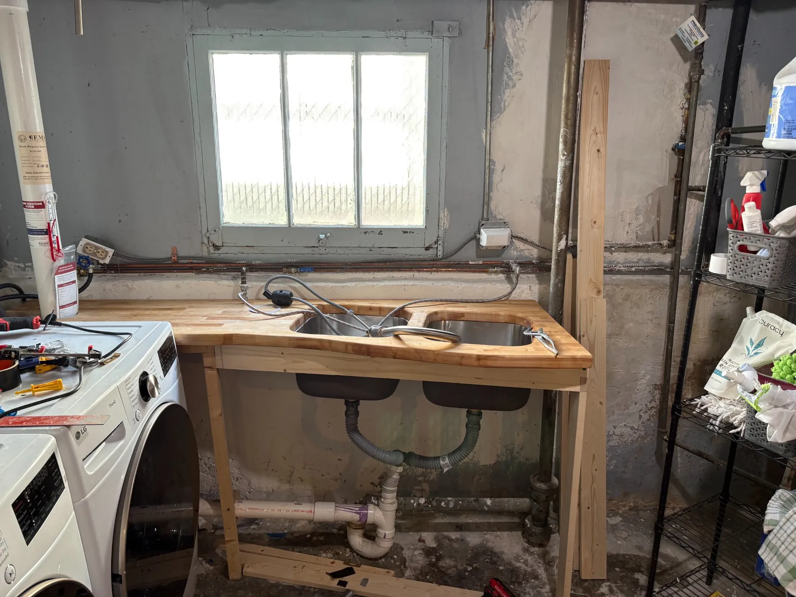
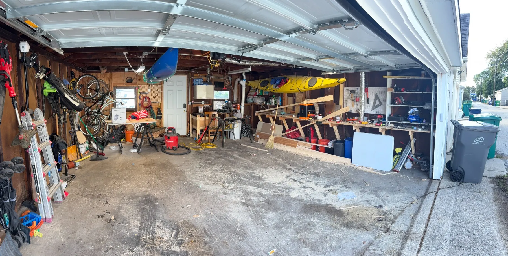
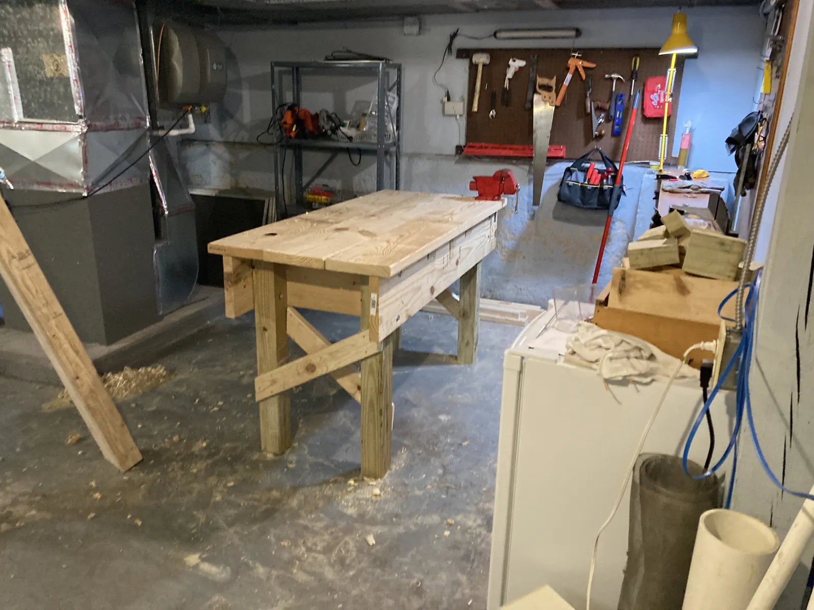
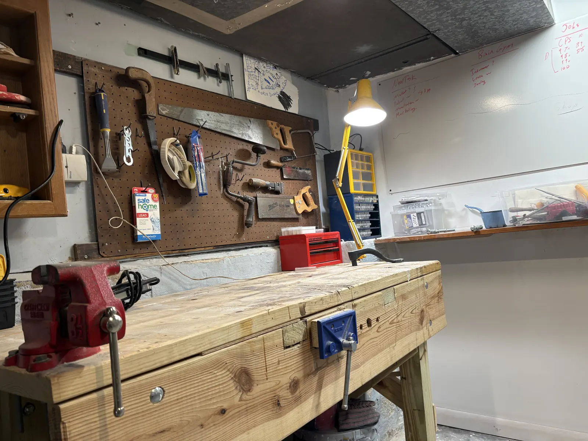
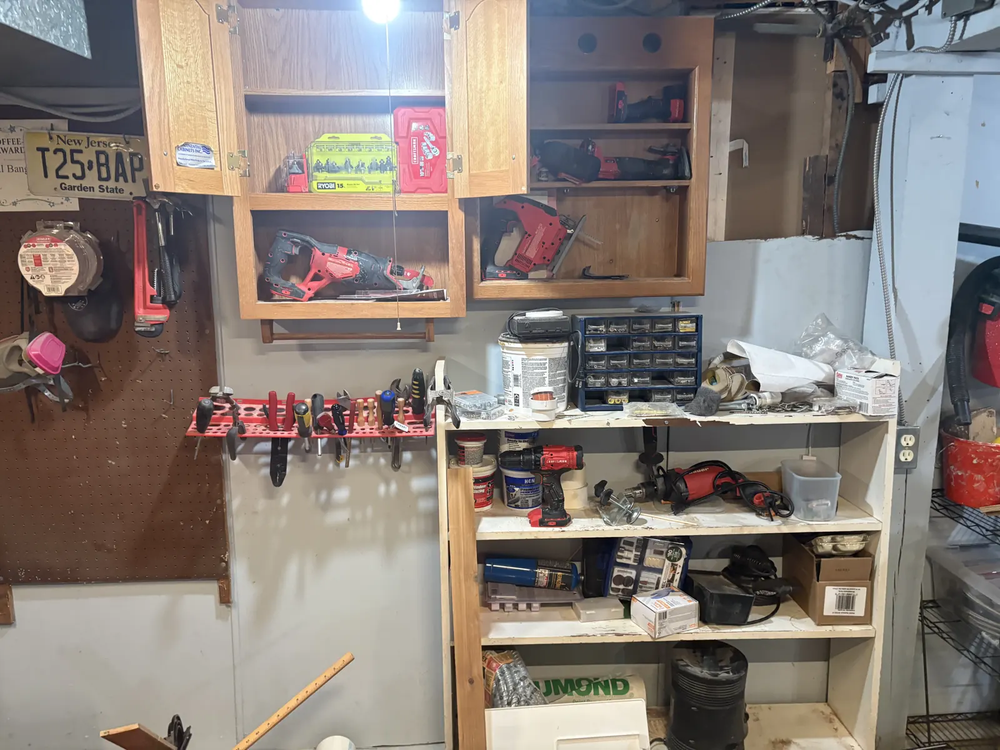
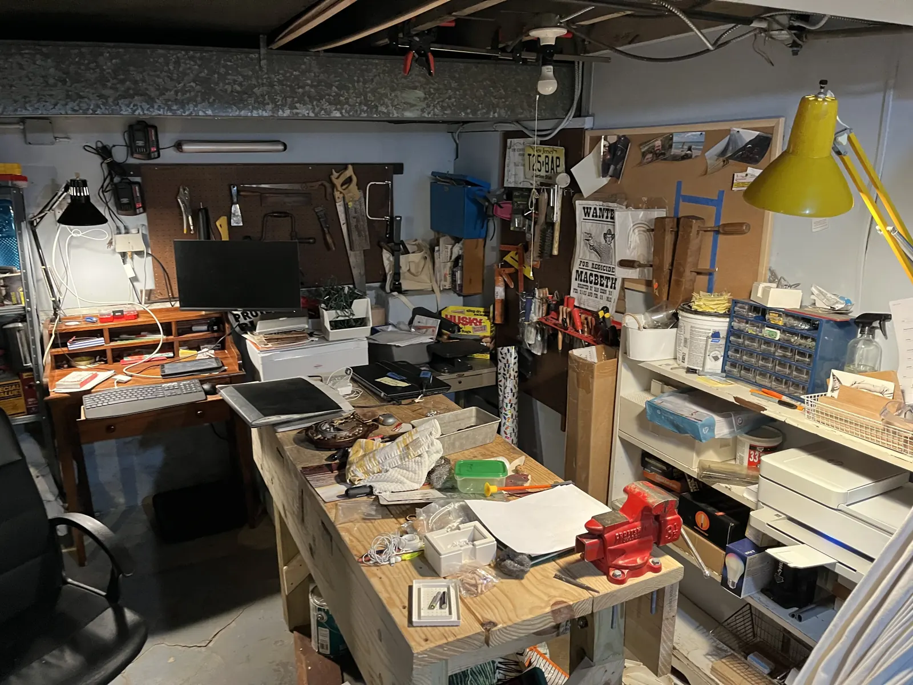

You have projects. Come use my workspace and tools to get them done—with or without my help, without covering your house in dust, and without spending the weekend at the Home Depot.
On your schedule. Not by yourself.
The buddy system isn't just for summer camp. Tinkering alone is lonely work. Woodworking alone can be dangerous.
I'm on hand to help you out and watch your back.
The problem I'm trying to solve
My name is Paul Bangiola. I'm an educator and a habitual DIY'er making a change.
Finding the right tools, enough workspace, and someone to help can turn a small project into a much bigger undertaking.
I want to offer well-maintained tools, an approachable teacher, and a place where you can get something done when you have the time.
I'm a jack of all trades, but a master of one: I'm a teacher. If I know how to do something, I can show you how to do it, too. And if you just need the space, that's fine.

owner resting post renovation with his business partner.
My work · How the idea grew
Before Brain Gym, there was a house, a list of projects, and a growing collection of tools.
I didn't start with a business plan for a makerspace. I started as a homeowner trying to fix things, build things, and learn how to do them properly. One project led to another. The tools accumulated, the workshop evolved, and eventually I began thinking about how useful this kind of space could be to other people.
01 · Learning by doing
Start with a problem at home.
Homeownership is an excellent way to discover how many things you don't know how to do yet. A repair becomes a woodworking project; a renovation requires new skills; a small improvement turns into a lesson in measuring, planning, and making things fit.
The custom wooden countertop and double utility sink are one example: practical work, built around an actual household need.

A useful household project, and a chance to develop the skills behind it.
02 · Making room to make things
The workshop becomes a project of its own.
Once you begin building and repairing things, you need somewhere to do the work. Tools need storage. Workpieces need support. Dust, lighting, access, and space all become design problems.
My garage has been part workshop, part storage, and part experiment in making limited space useful. It hasn't always looked like a polished makerspace—and that's part of the story.

An earlier stage of the garage: real constraints, real projects, and lots of room for improvement.
03 · Building the tools around the work
Better work starts with a better workspace.
Over time, the projects expanded beyond the things I was making to the systems that made making possible: benches, workholding, tool organization, and dedicated work areas.
Those improvements taught me as much as the finished projects did. A thoughtfully arranged workspace makes it easier to learn a tool, use it safely, and get something done.

Building the workshop itself is part of the maker's journey.
04 · From my shop to a shared idea
What if other people could use this, too?
Not everyone wants to buy a table saw for one project, turn a room into a shop, or learn every technique alone. Sometimes you just need a good tool, a sturdy bench, and somebody nearby who can show you how to start.
That's the idea behind Brain Gym: take what I've learned as a homeowner, maker, and teacher, and turn it into a welcoming place where other people can build confidence by building things.

The evolving workshop helped inspire a different kind of neighborhood makerspace.
More from the journey
Projects that taught me new techniques

Learning to organize tools and work areas

The workshop is always a work in progress
Now it's your turn to make something.
Bring a project, a question, or just a little curiosity. Brain Gym is being developed to make hands-on work more accessible.